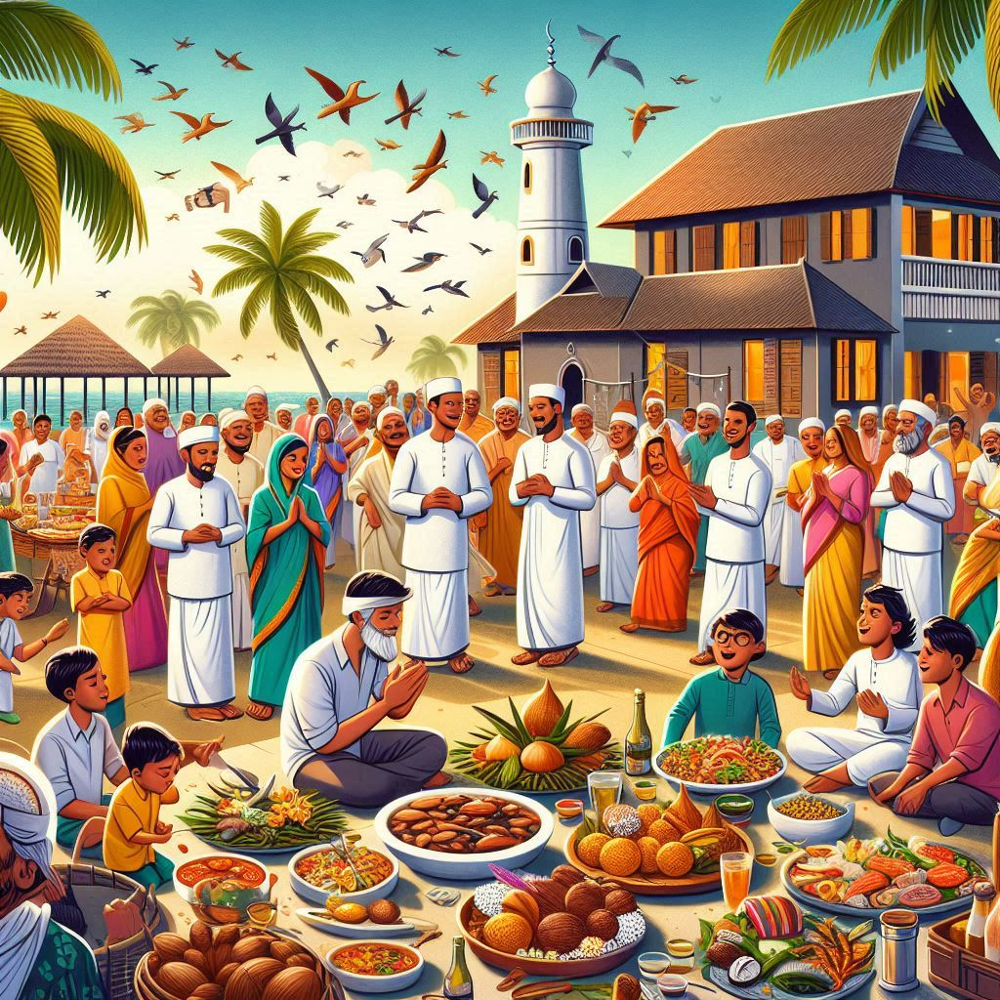

The traditional dress of Lakshadweep is heavily influenced by its Islamic culture, as well as the region's tropical environment. The clothing reflects both modesty and comfort, suitable for the warm and humid climate. Here's an overview of the typical dress worn by both men and women in Lakshadweep:
1. Eid al-Fitr
- Eid al-Fitr is one of the most significant festivals in Lakshadweep. It marks the end of Ramadan, the Islamic holy month of fasting. On this day, the islanders gather for special prayers at mosques, exchange gifts, and celebrate with elaborate feasts. The festival is also a time for community gatherings, where families and friends come together to share meals and joy.
2. Eid al-Adha
- Eid al-Adha, also known as the "Festival of Sacrifice," is another important Islamic festival. It commemorates the willingness of Ibrahim (Abraham) to sacrifice his son Ismail (Ishmael) as an act of obedience to God. The festival includes prayers, the sacrifice of animals (usually goats or cows), and distribution of meat among family, friends, and the less fortunate.
3. Muharram
- Muharram is observed as the Islamic New Year, marking the beginning of the Islamic lunar calendar. The 10th day of Muharram, known as Ashura, is particularly significant. It is a time for reflecting on the sacrifice of Imam Hussain, the grandson of Prophet Muhammad. Processions, prayers, and community events are held across Lakshadweep during this time.
4. Milad-un-Nabi
- Milad-un-Nabi is the celebration of the birth of the Prophet Muhammad. The islanders observe this day with special prayers, gatherings, and processions. It is a day of remembrance and tribute to the teachings of the Prophet.
5. Onam (Celebrated by some communities)
- Onam, though a festival primarily celebrated in Kerala, is also observed in Lakshadweep, particularly by the Mappila Muslims. This harvest festival is marked by elaborate feasts, traditional dance forms like Thiruvathira, and the famous Onam Sadya (feast), a spread of various traditional dishes served on banana leaves.

6. Christmas
- Christmas is celebrated by some Christian communities in Lakshadweep. The festival includes church services, prayers, and a communal feast to celebrate the birth of Jesus Christ.
7. Diwali (by some Hindu communities)
- Diwali, the Hindu festival of lights, is celebrated by some Hindu communities in Lakshadweep. It involves lighting lamps, bursting firecrackers, and offering prayers to Lord Ram, symbolizing the victory of good over evil.
8. National Festivals
- Independence Day (15th August) and Republic Day (26th January) are celebrated with flag hoisting ceremonies, parades, and cultural programs.
9. Local Festivals
- Sulaimani and Vishu are other local festivals observed by some communities in the islands, where cultural events and religious practices are carried out.
The festivals of Lakshadweep reflect the island's rich cultural diversity, with the celebrations centered around religious practices, family bonding, and community spirit. These festivals bring the community together, with a strong focus on charity, unity, and joy.